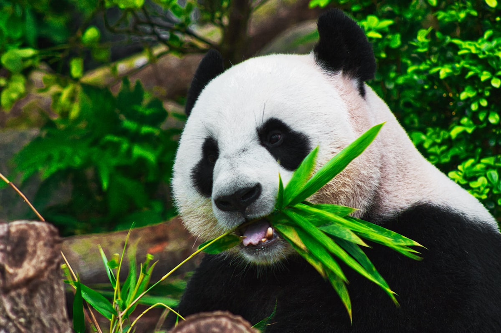

Overview

The Chengdu Research Base of Giant Panda Breeding (成都大熊猫繁育研究基地) is the world's premier facility for giant panda conservation, research, and education. Located just 10 km from downtown Chengdu, this 92-acre bamboo forest sanctuary is home to over 230 giant pandas and red pandas. It's the closest you can get to these gentle giants outside of the wild.
Founded in 1987 with just 6 rescued pandas, the base has become a global leader in panda breeding — over 200 cubs have been born here. The facility simulates the pandas' natural habitat with lush bamboo groves, streams, and shaded walking paths.
🇯🇵 Pandas & Japan
Giant pandas hold a special place in Japanese hearts. When China gifted pandas to Japan in 1972 (after normalization of relations), "panda fever" swept the nation. Today, Japan has 9 giant pandas in captivity, and Xiang Xiang's return to China in 2023 from Ueno Zoo drew emotional farewells from thousands of fans. Visiting the panda base in Chengdu is a dream for many Japanese — seeing dozens of pandas together is an experience impossible in Japan.
What You'll See
Adult Panda Enclosures
Watch adult pandas doing what they do best — eating bamboo (up to 38 kg per day!), sleeping, and occasionally playing. Each panda has a unique personality, and you can spend hours observing their charming behaviors.
Cub Nursery (Stars of the Show!)
The sunroom where baby pandas tumble, wrestle, and climb trees together. This is the most popular area — arrive early! Cubs are most active during morning feeding times. The sight of fluffy panda cubs playing is guaranteed to melt your heart.
Red Panda Area
Often overlooked, red pandas (小熊猫) are equally adorable and more active than their larger cousins. They roam freely in a forested area — you might spot one just meters away on a tree branch!
Panda Museum
Learn about panda biology, conservation history, and the base's groundbreaking research. Interactive exhibits explain the challenges of panda breeding and the success stories that have brought the species back from the brink.
Bamboo Forest Walk
A peaceful trail through towering bamboo groves, offering a meditative escape. The path connects the different panda areas and provides beautiful photo opportunities.

Chengdu — Beyond Pandas
- Jinli Ancient Street: Traditional architecture, street food, and Sichuan crafts — a sensory feast
- Wuhou Shrine: Temple dedicated to Zhuge Liang, the legendary strategist from Romance of the Three Kingdoms
- Wide and Narrow Alleys (宽窄巷子): Three parallel alleys blending Qing Dynasty architecture with modern boutiques
- Sichuan Opera: Face-changing performances (变脸) — a mesmerizing 300-year-old theatrical art
- Hot Pot: Chengdu is the capital of Sichuan hot pot — a must-try culinary adventure
Practical Information
Opening Hours
- Gate opens: 7:30 AM
- Closing: 6:00 PM (5:30 PM in winter)
- Best visiting time: 8:00 – 10:00 AM (feeding time, pandas are most active)
Tickets
- Regular: ¥55
- Panda volunteer program: ¥800 (half-day experience, must book well in advance)
Getting There
Take Metro Line 3 to Panda Avenue Station (大熊猫大道站), then a free shuttle bus to the base. Taxi from city center: approximately ¥30.
Tips for Japanese Visitors
- Book tickets online 7 days in advance — daily visitor limit enforced
- Arrive at opening time (7:30 AM) for the best panda viewing — they nap after 11 AM
- The new base area (Chengdu Research Base expansion) is less crowded
- No flash photography — it disturbs the pandas
- Wear comfortable walking shoes — the base is quite large
- Combine your visit with a Sichuan hot pot dinner and face-changing opera show
- Chengdu is famous for its relaxed tea house culture — perfect for unwinding